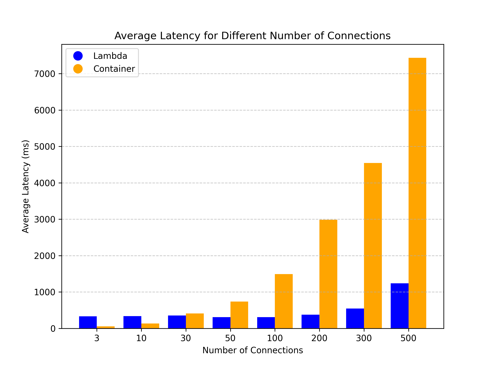

Hosting Next.js isn't just about Vercel. True, they offer unmatched support for new Next.js features and a great developer experience…
…but:
Today, I will explore options on how Next.js can easily work alongside key AWS services: Lambda, Lambda@Edge, and Fargate. Using these services instead of going after managed solutions, such as Vercel, can give you more flexibility and save you a serious amount of money.
In this post, I'll deploy the same Next.js app using the mentioned AWS services. I'll run several performance tests on these setups and then figure out the costs for each environment. Ready to go?
For those of you who are not familiar with Next.js, here is a quick overview of deployment options when using Next.js.
As a developer deploying Next.js app, you can choose between:
When it comes to the deployment of Next.js application, Vercel (comes from the creators of Next.js) stands out as the de facto standard, providing a seamless experience with its user-friendly interface, automatic scaling, and many other features. Netlify (and some other PaaS web hosting providers) also provides a similar solution.
While both Vercel and Netlify have generous free tiers and are great for many projects (I used them personally), there are a few things that could be a no-go for some (especially larger) projects:
There may also be other reasons why these managed solutions are not usable for your use case. That is why today, we will look at self-hosting in your own AWS account.
If you are unable/do not wish to use the fully managed solutions, you can always self-host your app on a cloud/service of your choice (in this post, we will focus on AWS). The main advantages of self-hosting are:
The recommended self-hosting approach by the creators of Next.js is to containerize your app and deploy it anywhere you need - allowing you to deploy your app basically anywhere. It is an easy approach that can also be reasonably cheap.
The problem: With Vercel or Netlify, your website is basically free when you have very low or no traffic at all. When using container, you have to pay even if it is running idly.
Due to the problem above, there were multiple attempts to provide developers a way to self-host their Next.js app using AWS Lambda, giving you the benefits of Vercel...
... but for a lower price.
Unfortunately, packaging the Next.js app to make it runnable in AWS Lambda is not a trivial problem to solve due to the nature and internal functioning of the Next.js framework.
Luckily, tools such as Stacktape (full disclosure, I am one of the developers) or SST are able to do so and provide developers a way to host the Next.js app using AWS Lambda a breeze.
They can do this thanks to OpenNext - an open-source adapter that enables developers to build the Next.js app in a way it is runnable in AWS Lambda function. Shout-out to its creators (also creators of SST) and its community.
In our test, we will be comparing 3 deployment setups of the Next.js app:
| # | Environment type | Configuration | Example Project to Deploy |
|---|---|---|---|
| 1 | AWS Lambda | 1024 MB memory, build using OpenNext | example project |
| 2 | AWS Lambda@Edge | 1024 MB memory, build using OpenNext | example project |
| 3 | AWS ECS Fargate container | 0.5 CPU, 1024 MB memory, HTTP API Gateway | example project |
All of the environments are set in the eu-west-1 (Ireland) region, which means most of the infrastructure is localized in this region (understandably, the Lambda@Edge must be set up in the us-east-1 region but is distributed across the globe).
All of the environments are production-ready and have CDN enabled. However, since I am measuring the performance of the underlying compute engines, I will send requests directly to the Lambda/Container origins to simulate how CloudFront(CDN) sends requests to these origins.
For sending requests, I have set up two EC2 instances: one in each eu-west-1 (Ireland) and us-east-1 (Virginia) region.
The goal of the test is to compare an average response time from the origins when the load is low.
For regular Lambda and Container environments, I carry out the test twice:
eu-west-1) - simulates a request from a user that is geographically close to the environmentus-east-1) - simulates a request from a user that is geographically far away from the environmentFor the Lambda@Edge environment, I only carry out one test:
us-east-1) - simulates a request from a user that is geographically far away from the environment (but the Lambda function still runs at the Edge - close to the user)eu-west-1. Considering my testing methods, the test would be equal to the regular Lambda test.Note that I am omitting the first response time due to Lambda functions cold starts. Cold starts can be lengthy, especially considering that the Next.js app Lambda zip package can be quite hefty (reducing the package size is one of the things that the OpenNext community is working on). The cold starts are something to consider, but for the purposes of this test, it would skew our results. In production environments, the problem with cold starts can be mitigated by using warmer.
Requests are sent one at a time in a following way:
- For
Containerenvironment I send requests toHTTP API Gatewaywhich delivers traffic to containers.- For
Lambdaenvironments I useLambda URL(I realize that calling Lambda URL is not the way Cloudfront calls the Lambda@Edge, but it is the closest we can get ATM).
| Origin | Requests from | Avg. Latency (ms) |
|---|---|---|
| Ireland Container | Ireland | 57.94 |
| Ireland Lambda | Ireland | 86.27 |
| Virginia Lambda (Lambda@Edge) | Virginia | 317.45 |
| Ireland Container | Virginia | 377.83 |
| Ireland Lambda | Virginia | 432.91 |
Our tests showed that responses to requests are quickest when they're made in the same region as the server (obviously). Containers are a little faster than Lambda, but not by much.
So, why is Lambda@Edge slower, even though it processes requests in the request's origin region? It's because of how OpenNext and Lambda@Edge work behind the scenes.
First, let's look at how Next.js uses internal caching.
To improve your application's performance and to reduce costs, Next.js employs multiple mechanisms for caching rendered work and data requests on the server (namely, fetch data cache and full route cache). As you will see, these caching mechanisms can slow down our Next.js app when using Lambda@Edge.

Traditionally, the cache is persisted on the server that hosts the Next.js app. This is also the case for our Container environment.
However, AWS Lambda functions do not have persistent storage to store the cache. OpenNext developers came up with the following solution: use S3 bucket as a centralized storage for the cache data so that all Lambda invocations can access the data in a single place.
This solution has a small caveat when using Lambda@Edge. When the cache bucket is located in a different region from where the Lambda is executing, Lambda must retrieve the cache data across the region, resulting in increased latency. That being said, the test also shows that request/response is still faster using Lambda@Edge than sending an entire request and getting the response from the other region. Moreover, with routes where you do not use cache at all, using Lambda@Edge can be significantly faster.

To generate traffic for load testing, I will be using the NodeJS HTTP benchmarking tool autocannon with the following options:
Tests will be carried out for Lambda and Container environments from our EC2 instance in the eu-west-1 region:
/). In other words, each request should target the index page of our Next.js app.Testing the Lambda@Edge environment does not make sense (the test would be same as for the Lambda environment).
When it comes to Lambda environments, the potential for scaling is huge, and there are basically no (hard) limits. What's more, every incoming request has the full memory and CPU power of Lambda function at its disposal. This means that even if you are performing more resource-intensive operations (DB operations, processing...), you can rely on resources being available.
On the other hand, when using a container, all of the requests come into the same container. Hence, the container resources are shared between the incoming requests.
In real life scenario, you can scale your containers easily either vertically (giving more resources to the container) or more commonly horizontally (adding more containers and spreading the load between them). In this test, I will not be using any horizontal/vertical scaling for our container, as I want to see how much a single container can take.

The worse performance of Lambda in this test (Container environment has better latencies when the load is lower) is a question mark since the average duration of Lambda (observed in AWS Cloudwatch metrics) is around 25 ms. Therefore, having an overall latency of ~300ms when the load is low is somewhat surprising. The cold starts could be affecting the average, but even the minimal latency in the tests was over 200ms. This would suggest that the latency delay happens not during Lambda execution but somewhere else. Whether this is due to some Lambda URL limitations, standard network delay or something else, we were not able to find out.
When I increased the load to around 200 connections (~6000 req/sec), we can see that the Lambda latency starts to increase. I was not able to get through ~6500 req/sec. I thought this was due to Lambda Throttling, but I only got two 429 Error(Throttling Error code) out of more than 250,000 processed requests.
My next guess was that the duration of Lambda increased due to overloading the S3 cache bucket, which in turn caused increased latency. This guess was wrong, as the Lambda average duration only rose to about ~30ms during high load.
My conclusion right now is that this in fact is due to Lambda Throttling. It seems that Lambda URL (gateway mechanism behind it) simply waits until Lambda can be executed (instead of sending 429 Error) using some queuing mechanism - which would explain both: why we are not getting many 429 Errors and why there is a latency increase. However, I was unable to find any resources confirming this, only an unanswered question on AWS forum asking basically about the same thing.
The previous graph shows that as the traffic ramps up, the average latency for the container starts to rise. We can see that already at around 70 connections (~700 req/sec), we are getting to the 1-second latency. From there on, the latency rises quite quickly. In the next graph, you will see that the error rate (amount of 503 errors) due to overload goes up as well.

This graph also confirms that the container is able to process around 4500 requests per minute which corresponds to the ~700request/sec threshold, we estimated from previous graph.
It should be noted that the my simulation conditions might not be completely the same as what users experience in their Next.js app. User's production app might be generally more complex - fetching data from APIs and databases, or performing more resource-intensive operations.
In test 2, I estimated the number of requests per second a single container can handle. With this information, we can develop pricing formulas to decide when it's better to use Containers or Lambdas.
Let's start by creating formulas for calculating the price of environments.
We will be comparing 4 environments:
I have added the environment
Fargate container + Application Load Balancerwhich was not previously shown in tests. I did it to provide a more complete picture for the reader (and HTTP API Gateway can easily be swapped with Application Load Balancer seamlessly).
Official information from AWS:
Breakdown of formula for monthly costs (where x is number of requests per month):
| Formula | Description | |
|---|---|---|
| + | average_lambda_function_duration * 0.0000000167 * x |
Price for execution time |
| + | 0.0000002 * x |
Price for each request |
| + | x * 0.0004 / 1000 + x / 50 * 0.005 / 1000 |
Price for cache bucket (Assuming 1 GET request per client request and 1 PUT request for every 50 client requests) |
Official information from AWS:
Breakdown of formula for monthly costs (where x is number of requests per month):
| Formula | Description | |
|---|---|---|
| + | average_lambda_function_duration * 0.00000005001 * x |
Price for execution time |
| + | 0.0000006 * x |
Price for each request |
| + | x * 0.0004 / 1000 + x / 50 * 0.005 / 1000 |
Price for cache bucket (Assuming 1 GET request per client request and 1 PUT request for every 50 client requests) |
Official information from AWS:
Breakdown of formula for monthly costs (where x is number of requests per month):
| Formula | Description | |
|---|---|---|
| + | 17.5 * ceil((x+1) / (2592000 * number_of_req_per_sec_handled_by_single_container)) |
Fees for Fargate container (2592000 is the number of seconds in the month) |
| + | x / 1000000 |
Price for HTTP API Gateway |
Official information from AWS:
Breakdown of formula for monthly costs (where x is number of requests per month):
| Formula | Description | |
|---|---|---|
| + | 17.5 * ceil((x+1) / (2592000 * number_of_req_per_sec_handled_by_single_container)) |
Fees for Fargate container (2592000 is the number of seconds in the month) |
| + | 16.2 |
Flat monthly fee for Application Load Balancer |
| + | x / (2592000 * 1000) * number_of_lcus_needed_for_thousand_req_sec * 5.76 |
Fee for LCUs |
I introduced new constants in the formulas. For formulas to be complete, we have to set these constants to specific values. I will also adjust them later on to show how they influence the final results :
average_lambda_function_duration - In the test, the average lambda duration was around 27ms. However, the average lambda duration might be higher in real scenarios since you will generate more complex websites and fetch data from APIs and databases. We will set it to 50ms for this simulation.
number_of_lcus_needed_for_thousand_req_sec - we will set this to 50. This can be more or less according to the amount of data you will be transferring on average in each request.
number_of_req_per_sec_handled_by_single_container - In the test, the container was able to handle more than 500 req/sec. However, as with the average_lambda_function_duration, these values might differ in production due to more complex operations. We will set this to 100.

We can see that if the average load is low, the Lambda environments are the cheapest. This is the case for most websites, where most of the content can be cached on CDN.
When your Lambda function gets more traffic, Lambda environment can get pricier. The amount of traffic the function receives depends on your Next.js app. Usually, more traffic happens because:
Already at 3 requests/second(Lambda@Edge) and 9 requests/second(Lambda), using containers with a load balancer seems to be a more suitable option.
For many production websites, there might not be many requests coming to the origin since most of content is cached on CDN, so using Lambda might be cheapest.
It is important to note that the graph can look very different if you change the constants that we have set.
For example, changing average_lambda_function_duration, number_of_req_per_sec_handled_by_single_container, or increasing/decreasing requests sent to the cache bucket - all these constants depend on your specific setup and influence the final price.
The following graph uses the same formulas, but average_lambda_function_duration is set to 30ms, and number_of_req_per_sec_handled_by_single_container is set to 50.

You should also note that our price estimations do not include Data Transfer fees that you will receive from AWS, as these should be similar for all environments and are not a differentiator.
Our tests shed light on the performance of different Next.js hosting options on AWS. Remember, your Next.js app's results might differ due to various factors.
Key takeaways from our tests:
Lambda environments work best when:
Container environments are a good choice if:
Thanks for making it this far! If you spot any errors in our tests or want to see more comparisons, let us know.